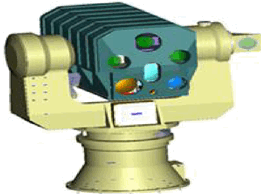

Design and implementation of two degree of freedom firing system based on stepper motor
Design a two degree of freedom turn table for a laser firing system based on two stepper motors.
1- Two stepper motor.
2- Two degree of freedom turn table. 3- Fixed plate.
4- Microcontroller.
5- Camera.
Firing system is used to execute the final process of the firing operation where a turn table is used to carry a laser gun in order to shoot a maneuvering target, to do that two stepper motor is used to move a turn table in two different plane azimuth and elevation (Φ, θ) to track the target.
Figure (1) shows two degree of freedom laser firing unit composed of laser gun and turn table included with two stepper motor, the main task of this unit is to fire the target by the laser gun in order to do that two stepper motor moves the table in two free planes to track the maneuvering target.
|  |
Fig (1) Laser firing unit
Target position is determined from a camera system (X, Y, Z) from this position we can determine the altitude and the range of the target and hence we can determine (Φ, θ) angles that the laser gun must execute to destroy the target.
Microcontroller is used to execute the control algorithm for axes transformation and navigation process to locate the target and hence a laser beam is radiated to destroy the target.